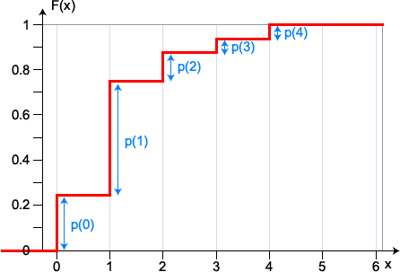

Cumulative probabilities
The cumulative probability for any value \(x\) is the probability that the random variable's value is less than or equal to \(x\). This is the sum of the probabilities for \(x\) and all values below it.
\[P(X \le x) = \sum_{u \le x} p(u)\]When these cumulative probabilities are considered together, they form the cumulative distribution function for \(X\).
Definition
The cumulative distribution function (CDF) for \(X\) is the function
\[F(x) = P(X \le x) = \sum_{u \le x} p(u)\]The cumulative distribution function is a step function, satisfying
\[F(-\infty) = 0\\ F(+\infty) = 1\]and increasing by \(p(x)\) at each \(x\).
Example
A couple want at least two children and no more than four, but will stop when they get a boy. Assuming that the probability of each child being a girl is \(\frac {1} {2} \), independently of the genders of previous children, the probability function for the number of girls in the resulting family is
| Number of girls, x | 0 | 1 | 2 | 3 | 4 |
|---|---|---|---|---|---|
| p(x) | 0.25 | 0.5 | 0.125 | 0.0625 | 0.0625 |
Draw the cumulative distribution function for X.
\(F(x)\) increases by \(p(x)\) at each x,

We now show an example based on a real data set.
Hurricanes in North Atlantic
The table below shows the numbers of hurricanes in the North Atlantic each year from 1910 to 2009.
| Decade | Year | |||||||||
|---|---|---|---|---|---|---|---|---|---|---|
| Beginning | 0 | 1 | 2 | 3 | 4 | 5 | 6 | 7 | 8 | 9 |
| 1910 1920 1930 1940 1950 1960 1970 1980 1990 2000 |
3 4 2 4 11 4 5 9 8 8 |
3 4 2 4 8 8 6 7 4 9 |
4 2 6 4 6 3 3 2 4 4 |
3 3 9 5 6 7 4 3 4 7 |
0 5 6 7 6 6 4 5 3 9 |
4 1 5 5 9 4 6 7 11 15 |
11 8 7 3 4 7 6 4 9 5 |
2 4 3 5 3 6 5 3 3 5 |
3 4 3 6 7 5 5 5 10 8 |
1 3 3 7 7 12 5 7 8 3 |
The diagram below displays the data in a jittered dot plot. It also shows the cumulative distribution function for the number of hurricanes in a year that has been randomly selected from the hundred.
Drag the vertical red line horizontally — the cumulative count increases in steps whose heights are the number of years that had each possible number of hurricanes. Note that the cumulative count remains constant between the integer values for the number of hurricanes.
Select Cumulative proportion to change the scale on the vertical axis to show the cumulative distribution function for the hurricane data.
These cumulative proportions are probabilities for a randomly selected year from the hundred in the data set. They will also be approximate probabilities for the number of hurricanes in any future year (assuming that there is no climate change).